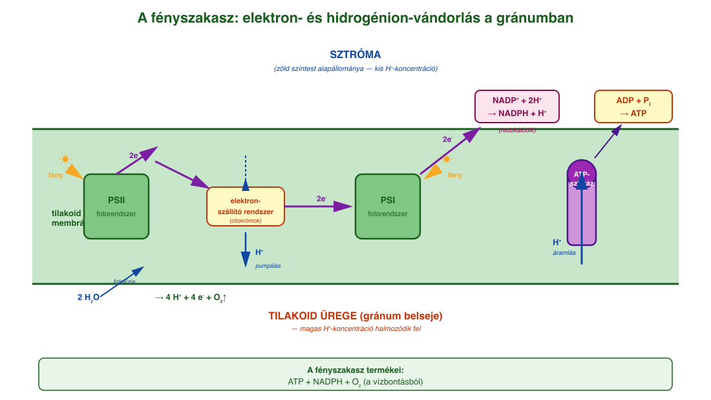
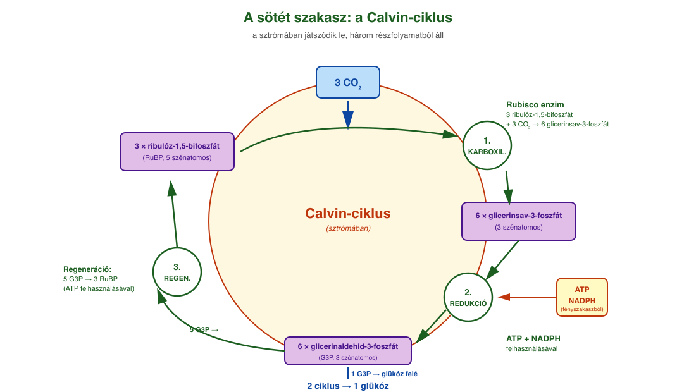
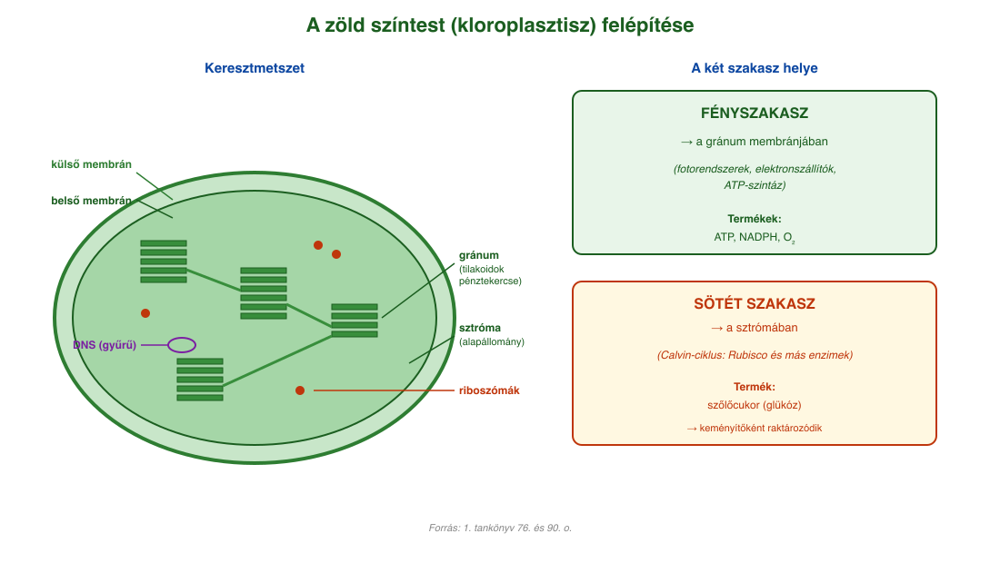

14. A fotoszintézis¶
A fotoszintézis jelentősége¶
A fotoszintézis az egész élővilág szempontjából alapvető jelentőségű felépítő folyamat. Alacsony energiatartalmú kiindulási anyagokból (szén-dioxidból és vízből) magas energiatartalmú, hidrogénben gazdag terméket, szőlőcukrot képződik. A folyamat energiaigényét fényenergia biztosítja.
A zöld növények és a kékbaktériumok sejtjeiben zajló fotoszintézis az alábbi egyszerűsített egyenlettel írható le:
6 CO₂ + 6 H₂O = C₆H₁₂O₆ + 6 O₂
A fotoszintetizáló, autotróf élőlények (kékbaktériumok, eukarióta moszatok, növények) az életközösségek legfontosabb termelő szervezetei. A földtörténet korai időszakában a kékbaktériumok által több milliárd évig végzett fotoszintézis megemelte a légkör oxigéntartalmát, létrehozták az oxidáló légkört. Ennek következtében visszaszorultak az anaerob baktériumok, és megjelentek az oxigénes légzést folytató aerob élőlények.
A fotoszintézis során a Nap sugárzó energiájának csak töredékét (1-3%) kötik meg, de végső soron minden heterotróf szervezet az általuk létrehozott szerves anyagokkal táplálkozik. A fotoszintézis alapvető jelentőségű folyamat a légkör összetételének alakításában is, hiszen a leghatékonyabb energianyeréshez, a biológiai oxidációhoz szükséges oxigén is ennek a folyamatnak a terméke. A növények a szén-dioxid megkötése révén széntartalmú vegyületeket raktároznak a testükben, aminek nagyobb része a légzéssel, illetve végső lebomlásuk során visszajut a környezetbe.
A zöld színtest (kloroplasztisz)¶
Eukarióta élőlényekben a fotoszintézis a zöld színtestekben történik. A zöld színtestet kettős (egy külső és egy belső) membrán határolja. A belső membrán (tilakoid) pénztekercsszerű feltekeredéseit gránumoknak (szemcsék) nevezzük. A belső membrán által határolt rész az alapállomány (sztróma). A sztróma tartalmazza a gyűrű alakú DNS-t és a riboszómákat is.
- A fotoszintézis fényszakasza a gránum membránjában levő enzimrendszeren játszódik le.
- A gránum belső tere a hidrogénionok felhalmozódásának helye.
- A sötét szakasz a sztrómában játszódik le.
A fényszakasz¶
A fotoszintézis fényszakasza a kloroplasztisz gránumán megy végbe. A membránban enzimkomplexek sorozata található, ami a fényenergiát befogva elektronvándorlást idéz elő, ez pedig hidrogénionok vándorlását okozza. A hidrogénionkoncentráció-különbség adja az energiát az ATP-szintézishez, a nagy energiájú elektronok és hidrogénionok pedig képesek redukálni a NADP⁺-molekulát.
A fény befogásához fotorendszerek (antennakomplex) találhatók a membránban. Eukarióta növények esetében két fotorendszer található: a fotorendszer I. és a fotorendszer II. Elnevezésük a felfedezésük sorrendjét tükrözi, nem a folyamatban elfoglalt helyüket.
A fotorendszerek nagy mennyiségben tartalmaznak könnyen gerjeszthető elektronokkal rendelkező karotinoid típusú vegyületeket (karotin, xantofill) és klorofillokat (klorofill-a és klorofill-b). Ezeket közösen antennapigmenteknek nevezzük.
Mindkét vegyületcsoportban közös a delokalizált elektronrendszer, ami a fotonok energiáját képes elnyelni (gerjesztődik) vagy átvenni egy másik antennapigment-molekulától. Az I-es fotorendszerben a karotin, a II-es fotorendszerben a xantofill található nagyobb mennyiségben. Ezek bizonyos hullámhosszú fotonokat (abszorpciós spektrum) elnyelnek, és energiájukat átadják klorofill típusú molekuláknak.
A klorofillok kisebb aránya miatt egy klorofillmolekula több karotinoid elnyelt energiáját veszi át, így az energia összegződik, mígnem egy klorofill-a-molekulában annyi energia összegződik, hogy egy elektron nemcsak gerjesztődik, hanem ki is szakad a molekulából (magasabb energiájú állapotba kerül) és egy elektronszállító rendszerre kerül. Az elektronhiányos klorofill-a-molekula elektronja különböző forrásokból pótlódik.
A fényszakasz során a gránumban megtörténik a fotolízis, ennek során fényenergia hatására a víz két hidrogénionra, két elektronra és oxigénre bomlik. A keletkező oxigén távozik a zöld színtestből és a növényből, ha csak biológiai oxidáció során fel nem használódik. Az elektronok a II-es fotorendszer elektronjait pótolják, a hidrogénionok pedig felhalmozódnak a gránum belsejében. Az elektronok a fotonok gerjesztésének hatására kiszakadnak a II-es fotorendszerből, és egy citokrómokból álló elektronszállító rendszerre kerülnek. Az elektronok energiája a hidrogénionok sztrómából való transzportjához biztosítanak energiát. Ezután az elektronok eljutnak az I-es fotorendszerhez, ahol ismétlődik a fotonokkal történő gerjesztés és az elektronszállítás, majd a nagy energiájú elektronok redukálják a NADP⁺-t.
Eközben a hidrogénionok felhalmozódnak a gránumban, a sztrómában viszont kisebb a koncentrációjuk. Ez a koncentrációkülönbség biztosítja a kémiai energiát az ATP-szintézishez. A hidrogénionok a gránumból az ATP-szintáz enzimen keresztül a sztróma irányába mozognak, hogy a koncentrációkülönbség kiegyenlítődjön. Közben ADP-ből és foszforsavból (foszfátionból) ATP keletkezik. A hidrogénionok végső soron a már elektronokat felvett NADP⁺-ra kerülnek, és ezzel NADPH keletkezik.
Összegezve: a fényszakaszban a fényenergia kémiai energiává való átalakítása, valamint a szerves anyagok előállításához szükséges redukálóképesség megszerzése történik. A folyamat során ATP és NADPH képződik. A fényenergia megkötése a színanyagok feladata (klorofill, karotin, xantofill). A hidrogénszállító molekula (NADP⁺) redukciójához szükséges hidrogén vízbontásból (fotolízis) származik. A folyamat során oxigén is keletkezik az elbontott vízből.
A sötét szakasz (Calvin-ciklus)¶
A sötét szakaszban (Calvin-ciklus) NADPH és ATP felhasználásával a szén-dioxid megkötése és redukciója zajlik.
A sötét szakasz során körfolyamat játszódik le. Lényegében három részfolyamatból áll. Vegyük most az ún. C₃-as növények (mert ahogyan látni fogjuk, a CO₂ megkötése után 3 szénatomos köztes termék képződik) működését alapul:
- Karboxiláció: a CO₂ beépítése egy szerves molekulába. A folyamatot a Föld legnagyobb mennyiségében meglévő enzime, a Rubisco katalizálja. Ennek során 3 aktivált állapotban lévő öt szénatomos ribulóz-1,5-bifoszfát-molekula megköt 3 CO₂-molekulát, és így 6 glicerinsav-3-foszfáttá alakul (amelyben a CO₂-molekula –COOH-csoportban van jelen).
- Redukció: a redukálószer a fényszakaszban képződött NADPH. A –COOH-csoportot ATP-vel aktiváljuk, majd következik a redukció, így a glicerinsavból glicerinaldehid keletkezik.
- Regeneráció: ennek során a glicerinaldehid-3-foszfát kilép a körfolyamatból, és (2 ciklus során) glükóz keletkezik belőle. A maradék 5 glicerinaldehid-3-foszfát regenerálódik 3 ribulóz-foszfáttá.
A glükóz elsőként a zöld színtestben keményítő formájában (nincs ozmotikus aktivitása) raktározódik, majd a fotoszintézis leállásával (éjszaka) szacharóz formájában a háncsrészben elszállítódik a növény többi részébe. A glükóz cellulózszintézisre, keményítőszintézisre használódik fel, vagy a biológiai oxidáció során energiát nyer belőle a növény. A sötét szakasz működéséhez a fényszakasz termékei szükségesek, ezért a sötét szakasz is fény jelenlétében megy végbe.
A fotoszintézis röviden a következő (bruttó) egyenlettel írható fel:
6 CO₂ + 12 H₂O = C₆H₁₂O₆ + 6 H₂O + 6 O₂
Az egyenlet leírja, hogy a kiindulási anyagokból elsődlegesen szőlőcukor keletkezik, és csak a víz egy részéből keletkezik oxigén. Emiatt szerepel 12 H₂O, és csak ebből keletkezik O₂. Az egyenlet így jobban szemlélteti, hogy nem a szén-dioxidból keletkezik a folyamat során oxigén, hanem a vízből!
C₄-es növények¶
A Rubisco enzim CO₂-kötő hatásfoka O₂ jelenlétében romlik. A C₄-es növények egyes sejtjei (amelyekben a sötét szakasz lezajlik) ennek kivédésére vastag falú sejtekkel vannak elszigetelve az oxigéntől, így azonban a CO₂-tól is. Egy 4 szénatomos savba, az almasavba (ezért a C₄-es elnevezés) „rejtik el" átmenetileg a CO₂-ot, és ezzel a molekulával juttatják be a sötét szakaszhoz.
A fotoszintézis intenzitását befolyásoló tényezők¶
A fotoszintézis intenzitását befolyásolja:
- a fényintenzitás,
- a szén-dioxid-koncentráció,
- a hőmérséklet.
Előbbi kettő növekedése egy idő után már nem tudja fokozni a fotoszintézis mértékét, elérjük a kloroplasztiszok működésének maximumát. A hőmérséklet pedig egy idő után nemcsak hogy nem fokozza a fotoszintézis mértékét, de csökkenti is azt, mivel a fotoszintézis egyik kulcsenzimét más működésre készteti (a Rubisco enzim oxigenáz-aktivitását növeli, és a szén-dioxid-megkötő karboxiláz-aktivitását csökkenti).
Ábrák¶

A fényszakasz a gránum (tilakoid) membránjában zajlik. A víz a II-es fotorendszernél fotolízissel két H⁺-ra, két elektronra és O₂-re bomlik. Az elektronok gerjesztődnek, és egy citokrómokból álló elektronszállító rendszeren keresztül az I-es fotorendszerhez kerülnek; itt ismét gerjesztődnek, és a NADP⁺-t redukálják NADPH-vá. Eközben a hidrogénionok a gránum belsejében felhalmozódnak. A keletkező koncentrációkülönbséget az ATP-szintáz enzim egyenlíti ki, és közben ADP-ből és foszfátból ATP keletkezik.

A sötét szakasz három részfolyamata a sztrómában. 1. Karboxiláció: 3 ribulóz-1,5-bifoszfát megköt 3 CO₂-t, így 6 glicerinsav-3-foszfát keletkezik (a Rubisco katalizálja). 2. Redukció: ATP és NADPH felhasználásával glicerinaldehid-3-foszfát keletkezik. 3. Regeneráció: 5 molekula visszaalakul ribulóz-1,5-bifoszfáttá, 1 kilép glükózképzésre. Két ciklus után 1 glükóz molekula keletkezik.

A zöld színtestet kettős membrán határolja. A belső membrán pénztekercsszerű feltekeredései a gránumok (a tilakoidok halmaza). A belső membrán által határolt alapállomány a sztróma, ami tartalmazza a gyűrű alakú DNS-t, a riboszómákat és a Calvin-ciklus enzimeit. A fényszakasz a gránum membránjában, a sötét szakasz a sztrómában zajlik.
Az anyag az 1. tankönyv 76, 77, 78, 79, 90. oldalain található.